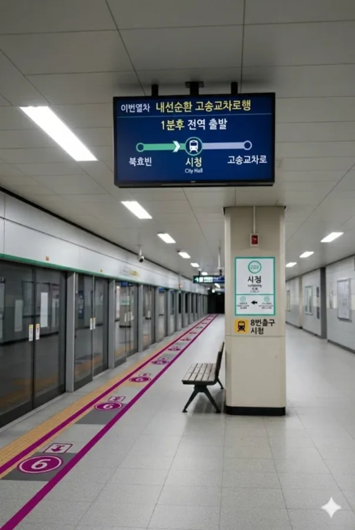
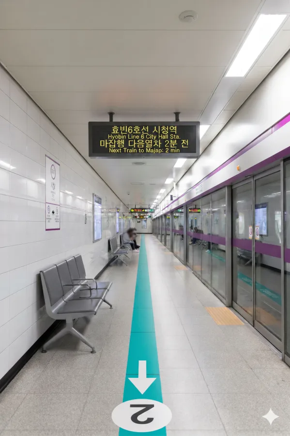

효빈 도시철도 2호선 228번, 효빈 도시철도 6호선 618번, 창전선 C22번. 효빈광역시 북구 고송동 79-2 지하 소재이다.
효빈광역시 북구 고송동 신시가지에 위치한 도시철도역으로, 효빈에서 승객이 많은 노선인 2호선과 6호선이 환승하는 주요 거점이다. 2호선은 효빈로를 따라, 6호선은 고송대로를 따라 건설되었다.
추후 창전선이 개통되면 무려 3개 노선이 만나는 트리플 역세권이 될 예정이다. 전 역인 청능역이 수요 불확실성을 이유로 개통이 미뤄진 것과 달리, 시청역은 이미 검증된 폭발적인 수요를 바탕으로 2033년 8월 30일에 조기 개통이 확정되었다. 이는 창전선 3단계 구간 중 가장 먼저 영업을 개시하는 사례가 될 것이다.
역명에서 알 수 있듯 효빈시청 바로 앞에 위치하여 시청 방문객이나 시청공원 이용객들이 많이 찾는다. 2004년 광역시청 이전과 함께 주변 개발이 가속화되어 급격한 인구 증가가 이루어졌으며, 중앙로에 이은 거대 상권이 형성되어 수요가 폭발적으로 늘어났다. 고송지역 주민들의 타 지역 통근 수요도 상당하여 효빈광역시 내에서도 매우 붐비는 역 중 하나로 꼽힌다.
참고로 2호선 시청역과 3호선 청능역은 꽤 가까운 편이라 간접 환승이 가능하다고 알려져 있다. 하지만 바로 다음 역인 북효빈역에서 직접 환승이 가능하기 때문에 굳이 이 루트를 이용하는 사람은 많지 않다.
|
2
6
C
시청역 출구 정보
|
||
|---|---|---|
| 번호 | 주요 시설 및 방향 | 비고 |
| 1 | 고송8동행정복지센터 | |
| 2 | 월림초등학교 | |
| 3 | 3호선 청능역, 사복동 | |
| 4 | 포아이즈아파트 | |
| 5 | 시청오거리 | |
| 6 | 시청공원 | |
| 7 | 시청공원 | |
| 8 | 효빈시청, 고송부영아파트, 고송중흥S클래스아파트 | |
| 9 | 효빈시의회, 현대백화점 효빈점 | |
| 시청역 이용객 통계 | ||||
|---|---|---|---|---|
| 연도 | 2호선 | 6호선 | 총합 | 비고 |
| 2020년 | 27,891명 | 22,492명 | 50,383명 | |
| 2021년 | 30,191명 | 23,496명 | 53,687명 | |
| 2022년 | 33,791명 | 25,494명 | 59,285명 | |
| 2023년 | 35,191명 | 27,090명 | 62,281명 | |
| 2024년 | 35,331명 | 27,192명 | 62,523명 | |
6호선 개통 전까지는 인근의 고송교차로역이 터져나가기 직전이었으나, 시청역 환승 개통 후 수요가 어느 정도 분산되었다. 그럼에도 불구하고 효빈 전체 2위인 고송교차로역의 그늘에 가려 체감이 덜할 뿐, 비수도권 역 치고는 엄청난 이용객 수를 자랑한다. 인접 역들과 수요를 나누어 가짐에도 이 정도라는 것은 효빈시가 얼마나 대중교통 중심 도시인지를 방증한다. 창전선 개통 후에는 환승 유입으로 인해 이용객이 더욱 늘어날 전망이다.
※ 복선 상대식 승강장 (지하 2층)

| 북효빈 ↑ | |||
| 하행 (내선) | ㅣ | ㅣ | 상행 (외선) |
| ↓ 고송교차로 | |||
| 상행 (외선) | 2 효빈 도시철도 2호선 (완행/급행) | 북효빈 · 입희 · 중수 방면 (급행 정차) |
| 하행 (내선) | 2 효빈 도시철도 2호선 (완행/급행) | 효빈대학교 · 중앙로 · 월천 방면 (급행 정차) |
※ 복선 상대식 승강장 (지하 3층)

| 동고송 ↑ | |||
| 하행 | ㅣ | ㅣ | 상행 |
| ↓ 고송교차로 | |||
| 상행 | 6 효빈 도시철도 6호선 | 마잡 방면 |
| 하행 | 6 효빈 도시철도 6호선 | 고송나루 방면 |
※ 복선 상대식 승강장 (지상 2층)
※ 창전선 급행 열차는 이 역에 정차하지 않고 통과한다.
| 청능 ↑ | |||
| 상행 | ㅣ | ㅣ | 하행 |
| ↓ 고송강변 | |||
| 상행 | C 창전선 (완행) | 팔조 방면 |
| 하행 | C 창전선 (완행) | 토모리해수욕장 방면 |
효빈광역시 시내버스 노선들이 주로 정차한다.
| 구분 | 정류소명 | 노선 번호 |
|---|---|---|
| 순방향 | 시청역 | 25, 123, 232, 522, 3000, 6000, A01, 3333 |
| 역방향 | 시청역(건너편) | 52, 213, 322, 252, 3000R, 6000R, A01R, 3333R |